Scatterplot with Truth and Estimate Values
scatter.RdThis function creates a scatterplot comparing truth (typically observed)
and estimate (typically predicted) values. By default, truth is mapped
to the x-axis and estimate to the y-axis, but this can be reversed using
the swap_axes argument. It supports grouped data,
adding facets for each group, and can optionally include agreement metrics as text annotations in the plot.
Metrics can be positioned either inside the plot area or outside as subtitles or facet labels.
The function can automatically switch from simple points (geom_point()) to density-colored points
(ggpointdensity::geom_pointdensity()) when large sample sizes are detected, helping to mitigate overplotting.
Usage
scatter(
data,
truth,
estimate,
metrics = list(`R²` = yardstick::rsq, bias = md, `bias%` = rmd, RMSE =
yardstick::rmse, `RMSE%` = rrmse),
metrics_position = "inside",
metrics_inside_placement = "upperleft",
point_style = c("point", "pointdensity", "auto"),
density_scale = c("absolute", "relative"),
swap_axes = FALSE,
...
)Arguments
- data
A data frame or tibble. Can be grouped (using
dplyr::group_by) to create faceted plots.- truth
The column name in
datacontaining truth values. Should be unquoted.- estimate
The column name in
datacontaining estimate values. Should be unquoted.- metrics
A list of metrics to compute and display. Metrics can include almost any function from the yardstick package (e.g.,
rsq,rmse,mape). This can be either an unnamed list of functions or a named list such aslist("R\u00B2" = rsq, "bias%" = rmd), in which case the provided names are used in the labels. Defaults tolist("R\u00B2" = rsq, "bias" = md, "bias%" = rmd, "RMSE" = rmse, "RMSE%" = rrmse). Set toNULLto disable.- metrics_position
A character string indicating where to display metrics. Options are
"inside"(as annotations within the plot) or"outside"(as subtitle or facet labels). Defaults to"inside".- metrics_inside_placement
A character string indicating the position of the metrics within the plot. Options are
"upperright","upperleft","lowerright", or"lowerleft". Defaults to"upperleft".- point_style
Character; one of
c("point", "pointdensity", "auto"). -"point"usesgeom_point(). -"pointdensity"usesggpointdensity::geom_pointdensity(), coloring points by density. -"auto"automatically switches to"pointdensity"whennrow(data) >= density_switch_n.- density_scale
Character; one of
c("absolute", "relative"). Controls how colors represent density: -"absolute"maps color toafter_stat(density)with a global scale shared across facets, using a mild"sqrt"transform. This is suitable when comparing density magnitudes between facets. -"relative"maps color toafter_stat(ndensity)(values normalized to [0,1] per facet). This emphasizes local patterns but is not directly comparable across facets.- swap_axes
Logical; if
FALSE(default),truthis mapped to the x-axis andestimateto the y-axis. IfTRUE, the axes are swapped, withestimateon the x-axis andtruthon the y-axis (i.e., the previous behavior of the function). This option affects only the visual orientation of the plot and does not affect how agreement metrics are calculated - metrics are always computed asmetric(truth, estimate)regardless of axis order.- ...
Additional parameters controlling plot appearance and advanced color options:
points_colorColor of points (default
"black"). Ignored for pointdensity when density is mapped.points_sizeSize of points (default
2).points_shapeShape of points (default
1).points_alphaTransparency of points (default
1).density_adjustNumeric passed to
geom_pointdensity(adjust = )as the bandwidth multiplier. Ignored ifpoint_style = "point".density_methodOne of
c("auto", "kde2d", "neighbors")forgeom_pointdensity(method = ). Ignored ifpoint_style = "point".density_show_legendLogical; show a colorbar for density. Defaults to
FALSE.density_switch_nInteger threshold used when
point_style = "auto"(default5000).facet_scaleOne of
c("fixed", "free"). Controls whether facets share the same square range or scale independently.plot_rangeOptional numeric vector of length 2 giving the visible axis range to use for both x and y axes. This keeps the plotting window square while allowing agreement metrics to still be calculated from all data.
text_sizeText size (pt) for metrics (default
10).text_background_alphaTransparency of metrics text background (default
0.5;0disables background).metrics_nlinesSplit metrics text into multiple lines (default
1line).density_paletteName of viridis palette to use for density mapping:
"viridis","magma","plasma","inferno", or"cividis".density_fixed_colorOptional single color (for example
"darkred") to draw all points, disabling density coloring.density_scale_customA custom ggplot2 scale (for example
scale_color_distiller(palette = "Reds")) to override the default viridis scale.
Details
The function dynamically calculates axis ranges based on the truth and estimate values, ensuring a square plot using
coord_fixed(). Supplying plot_range overrides the visible range for both axes while preserving full-data metric
calculations. For grouped data, it uses facet_wrap() to create separate scatterplots for each group.
When point_style = "pointdensity", points are colored by their local density to reduce overplotting.
The density_scale argument determines whether color is scaled globally ("absolute") or normalized per facet ("relative").
The color palette can be changed with density_palette, replaced with a fixed color using density_fixed_color,
or overridden entirely with a custom ggplot2 scale passed via density_scale_custom.
Agreement metrics are calculated using the agreement_metrics() function and displayed according to metrics_position.
For grouped data with metrics_position = "outside", metrics are added to the facet labels; with "inside", they are displayed
as text annotations within each plot.
The choice of placing observed (truth) values on the x-axis and predicted
(estimate) values on the y-axis follows recommendations from the statistical
and ecological modelling literature. Pineiro et al. (2008) argued that
regression and agreement diagnostics are most interpretable when the observed
variable is treated as the y axis. More recently, Pauwels et al.
(2019) revisited this issue and presented counterarguments supporting the
opposite convention. The swap_axes argument is provided to accommodate both
perspectives, with the default setting placing the observed values on the x-axis.
Pineiro, G., Perelman, S., Guerschman, J. P., & Paruelo, J. M. (2008). How to evaluate models: observed vs. predicted or predicted vs. observed? Ecological Modelling, 216(3-4), 316-322.
Pauwels, V. R. N., Chen, Y., & Sadegh, M. (2019). Revisiting the observed-predicted scatterplot debate: is the 1:1 line really the best reference? Ecological Modelling, 407, 108802.
Examples
library(dplyr)
library(ggplot2)
library(yardstick)
set.seed(123)
df <-
tibble(
truth = rnorm(150, 10, 2),
estimate = truth + rnorm(150, 0, 1),
group = rep(c("A", "B", "C"), each = 50),
group2 = rep(c("D1", "D2"), each = 75)
)
# Simple scatterplot
scatter(df, truth, estimate)
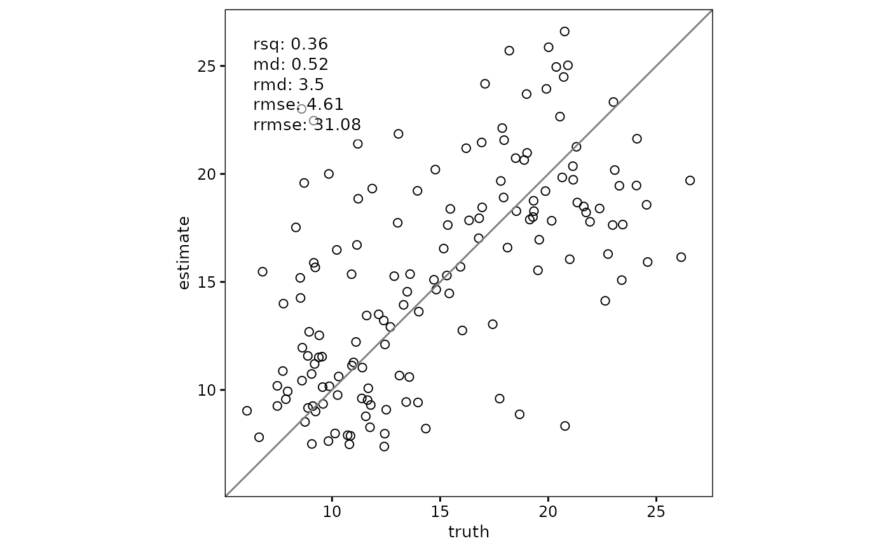
# Scatterplot with agreement metrics inside the plot
scatter(
df,
truth,
estimate,
metrics = list("R\u00B2" = rsq, mape = mape)
)
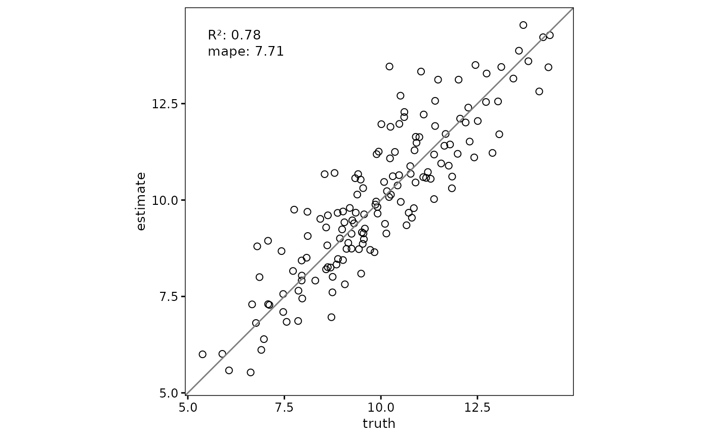
# Limit the visible plotting range while keeping full-data metrics
scatter(df, truth, estimate, plot_range = c(6, 12))
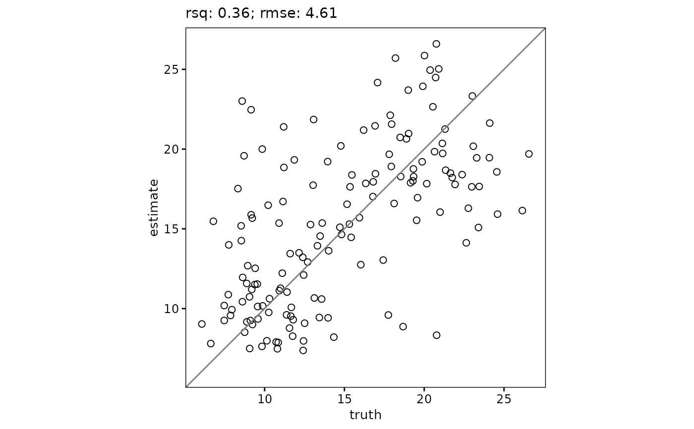
# Show metrics outside the plot
scatter(
df,
truth,
estimate,
metrics = list("R\u00B2" = rsq, RMSE = rmse),
metrics_position = "outside"
)
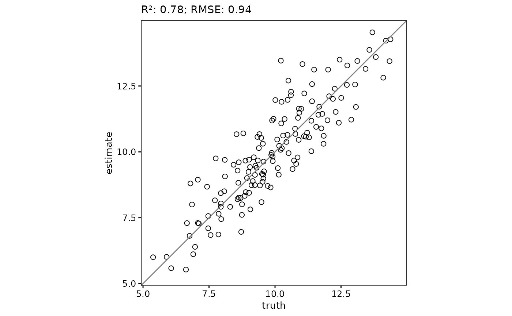
# Grouped scatterplot with metrics inside each facet
df %>%
group_by(group) %>%
scatter(
truth,
estimate,
metrics = list(
"R\u00B2" = rsq,
RMSE = rmse,
"RMSE%" = rrmse
),
metrics_position = "inside"
)
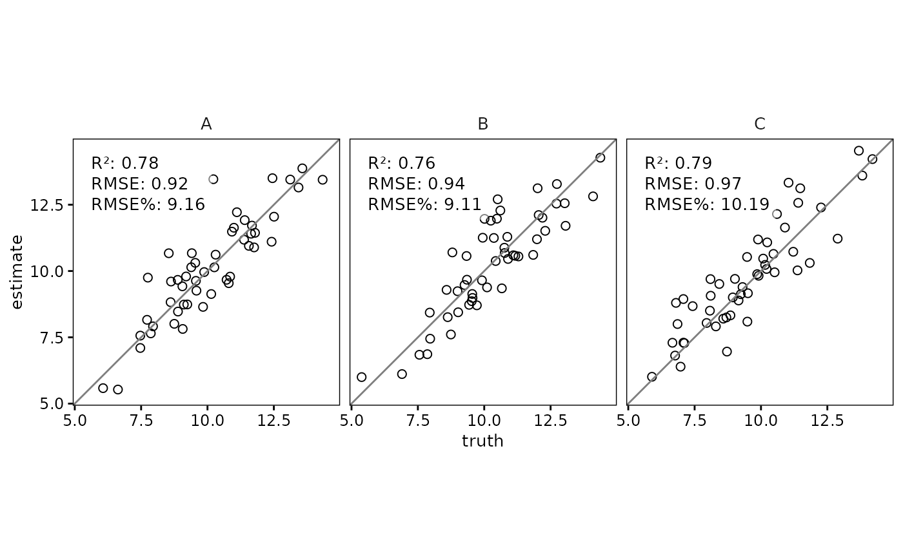
# Grouped scatterplot with metrics outside each facet
df %>%
group_by(group) %>%
scatter(
truth,
estimate,
metrics = list("R\u00B2" = rsq, RMSE = rmse),
metrics_position = "outside"
)
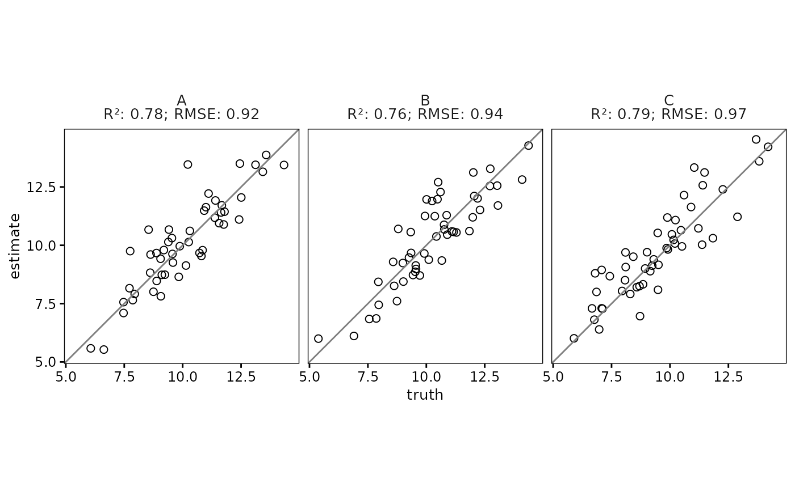
# Force point-density with relative scale (0-1 per facet)
df %>%
group_by(group) %>%
scatter(
truth,
estimate,
point_style = "pointdensity",
density_scale = "relative",
density_show_legend = FALSE
)
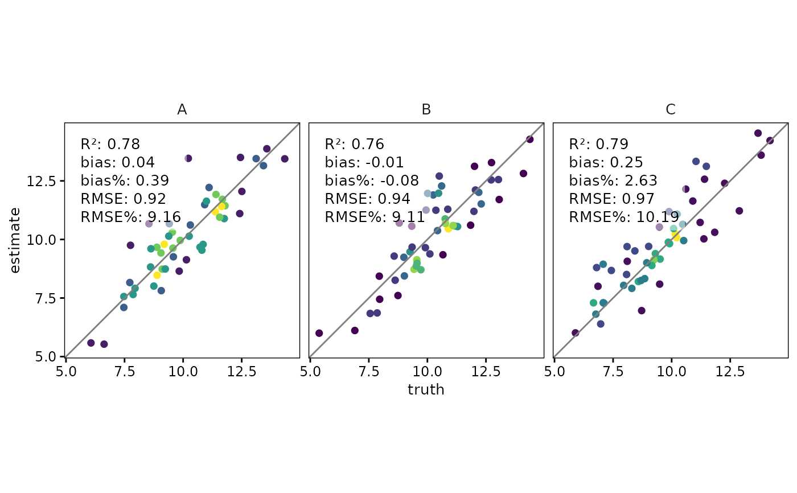
# Change the palette used for density mapping
scatter(
df,
truth,
estimate,
point_style = "pointdensity",
density_scale = "absolute",
density_show_legend = TRUE,
density_palette = "plasma"
)
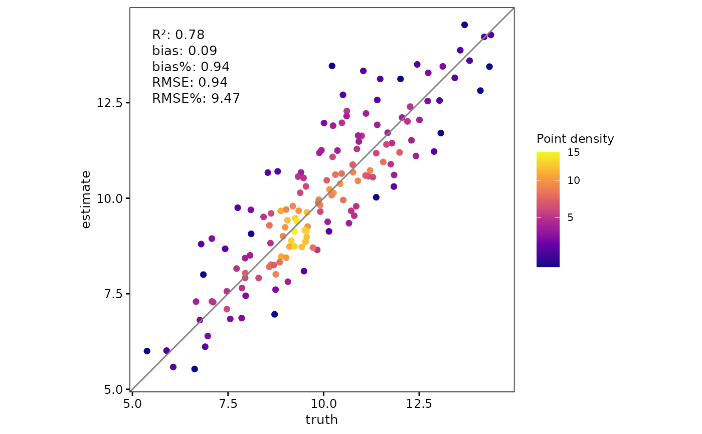
# Provide a custom ggplot2 color scale
scatter(
df,
truth,
estimate,
point_style = "pointdensity",
density_scale = "absolute",
density_scale_custom = ggplot2::scale_color_distiller(palette = "Reds"),
density_show_legend = TRUE
)
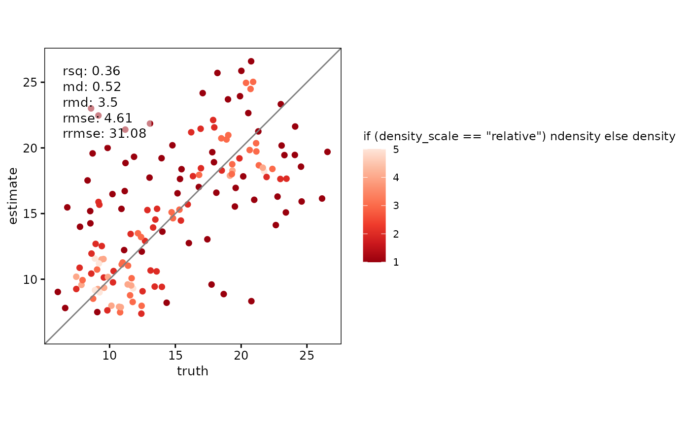
# Auto-switch to point-density for larger datasets
scatter(
df,
truth,
estimate,
point_style = "auto",
density_switch_n = 100
)
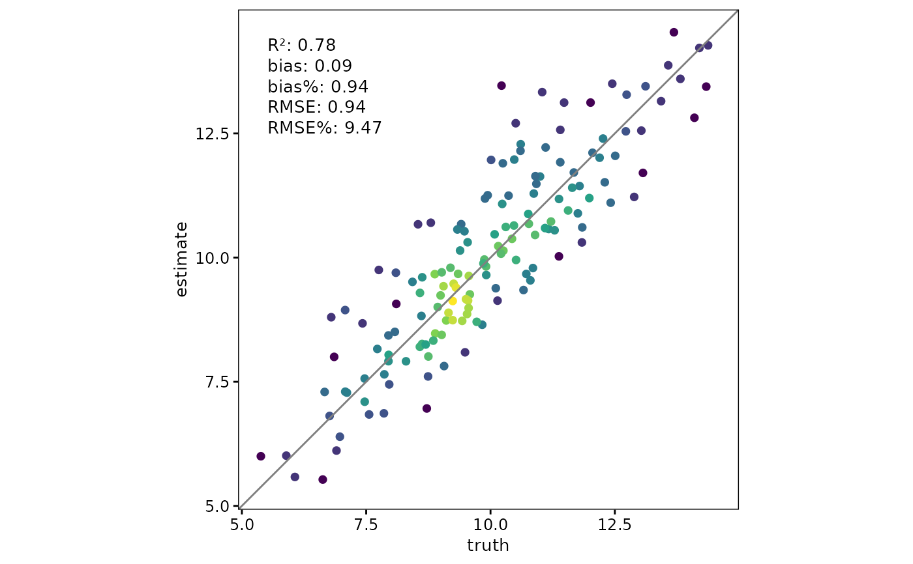
# Alternative density method and smoothing
scatter(
df,
truth,
estimate,
point_style = "pointdensity",
density_scale = "absolute",
density_method = "neighbors",
density_adjust = 1.3,
density_show_legend = TRUE
)
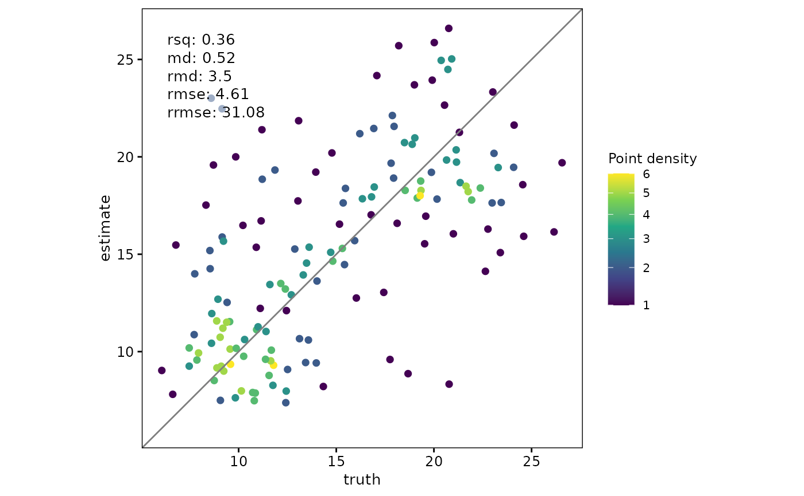